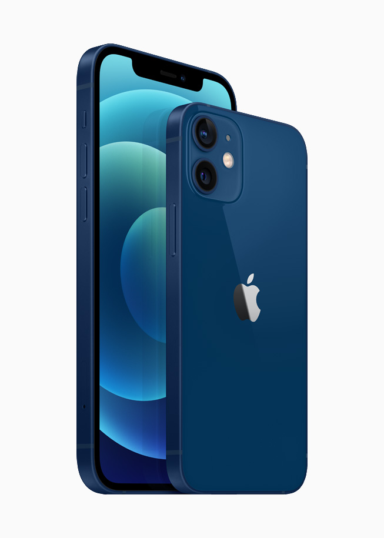
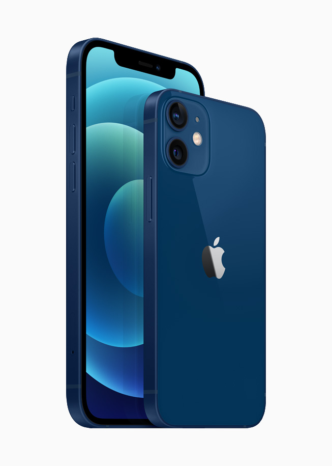

iPhone 12 in 2025
The iPhone 12 marked a turning point in Apple’s smartphone lineup. It introduced 5G to iPhones, brought back the beloved flat-edge design, and featured a stunning Super Retina XDR OLED display. Paired with the powerful A14 Bionic chip, it was future-ready right out of the box.
Now, in 2025, with the iPhone 16 series already out, many are asking: Is the iPhone 12 still worth buying?
Key Specs
Feature
Details
Display
6.1" Super Retina XDR OLED
Processor
A14 Bionic chip
Rear Camera
Dual 12 MP (Wide + Ultra-Wide)
Front Camera
12 MP with Night Mode
Battery Life
~17 hours video playback
Build
Ceramic Shield, Aluminum body
Water Resistance
IP68 (up to 6m for 30 min)
Charging
MagSafe, Qi wireless, 20W fast charging
Software
Upgradable to iOS 18, likely iOS 19 & 20
Camera Performance
The iPhone 12 still captures stunning photos in 2025. Thanks to Night Mode on all cameras, Smart HDR 3, and Deep Fusion, it handles both day and low-light shots gracefully. It may not have a telephoto lens like the Pro models, but for casual users and content creators, it still does a solid job.
And yes – Dolby Vision 4K video recording is still a rare gem at this price.
Performance & Daily Use
With the A14 Bionic, you get smooth performance whether you’re gaming, multitasking, editing videos, or scrolling social media. While newer chips like A16 or A17 are faster, the difference is mostly noticeable in heavy tasks. For everyday users? The iPhone 12 still flies.
Design & Build
The return of the flat-edge design was a hit, and it still looks modern today. The Ceramic Shield front makes it more durable than older models, and the aluminum frame feels both premium and light in hand.
Plus, it’s available in cool colors like Black, White, Blue, Green, Purple, and Product(RED).
Battery Life & Charging
Battery life is decent, though not outstanding by 2025 standards. You’ll get through the day with moderate use. It supports 20W fast charging, MagSafe, and Qi wireless charging, but note: Apple stopped including chargers in the box starting with this model.
So, yes, you’ll probably need to buy your own adapter.
Software Support
The iPhone 12 shipped with iOS 14 and is now running iOS 18. Apple usually supports devices for about 6–7 years, so you can expect updates through iOS 20 or even longer. That means at least 2–3 more years of updates, keeping your phone secure and fresh.
Where It Falls Short
- No 120Hz display (still 60Hz)
- Base model starts at 64GB storage
- Lacks telephoto zoom and LiDAR (found in Pro models)
- Battery life is average, not great
- No fingerprint scanner (only Face ID)
Verdict – Should You Buy iPhone 12 in 2025?
YES – if you’re on a budget.
The iPhone 12 offers solid performance, great cameras, premium design, and iOS updates for a few more years. If you can get it refurbished or used in good condition, it’s a fantastic mid-range iPhone.
But if you want better battery, camera zoom, or a 120Hz display, look toward the iPhone 13 Pro, 14 Pro, or newer.